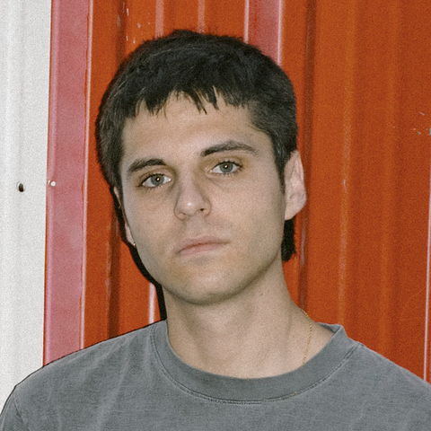

Arquitecto madrileño (1998). Graduado por la ETSAM (2021) y habilitado por la ETSAV (2023). Experiencia principalmente como colaborador en YYPLUSPLUS, en el equipo de arte y construcción de la serie Murderbot (temporada 2, España) y en estudios como Pedro Pitarch y TAKK. Me interesa el cruce entre la arquitectura construida y las herramientas digitales: modelado, parametrización, generación de imágenes y animación.
Madrid-born architect (1998). Graduated from ETSAM (2021) and professionally qualified at ETSAV (2023). Experience mainly as a collaborator at YYPLUSPLUS, in the art department and construction team of the series Murderbot (season 2, Spain), and at offices such as Pedro Pitarch and TAKK. I am interested in the crossing between built architecture and digital tools: modelling, parametric design, image generation and animation.
ContactoContact
